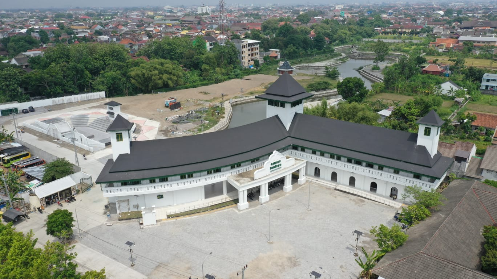

Berita Jogja Terkini
Update News
Taman Budaya Embung Giwangan Terintegrasi KCB Kotagede

WIROBRAJAN - Pemerintah Kota Yogyakarta terus melakukan pembaharuan terhadap fasilitas dan pengelolaan Taman Budaya Embung Giwangan yang akan menjadi pusat wisata dan ekspresi seni budaya di Jogja selatan. Harapannya, dengan pengelolaan yang sistematis dan terencana dengan baik, Taman Budaya Embung Giwangan dapat memberikan peluang bagi seniman yang ada di Kota Yogyakarta untuk berekspresi tanpa batas. Hal ini disampaikan oleh Kepala Dinas Kebudayaan (Kundha Kabudayan) Kota Yogyakarta Yetti Martanti saat memberikan sambutan pada kegiatan FGD "Merawat dan Mengemas Buah Peradaban Masyarakat Kota Yogyakarta, Merumuskan Strategis Pengelolaan Taman Budaya Embung Giwangan" yang diikuti perwakilan seniman se Kota Yogyakarta, di Hotel Forriz Jalan Hos Cokroaminoto, Selasa (20/2). Yetti mengatakan, Taman Budaya Embung Giwangan didesain sebagai sebuah ruang ekspresi seni dengan berbagai fasilitas seperti panggung terbuka (amphitheater) dengan kapasitas lebih dari 500 penonton, Gedung Entrance yang dapat dimanfaatkan sebagai mini gallery, Gedung Graha Budaya dengan fasilitas Indoor Amphitheater dan Hall Exhibition, serta area sisi barat dan timur embung yang dapat mendukung berbagai aktivitas outdoor. Meskipun sampai saat ini pembangunan Taman Budaya Embung Giwangan belum sepenuhnya selesai, beberapa fasilitas yang sudah terbangun akan mulai dibuka dan dimanfaatkan pada awal tahun ini. “Kami berharap keberadaan Taman Budaya ini menjadi lebih dikenal oleh masyarakat sebagai salah satu pusat aktivitas seni budaya di Kota Yogyakarta,”jelasnya. Sehingga, pihaknya berharap, tempat ini tidak hanya sebagai tempat ekspresi seni tetapi juga sebagai tujuan destinasi wisata yang terintegrasi dengan Kawasan Cagar Budaya Kotagede. “Semoga dengan pertemuan ini bersama-sama untuk menghidupkan taman budaya tidak hanya sebagai ruang ekspresi saja tetapi juga menjadi salah satu daya tarik di Kota Yogyakarta terhadap ekonomi kreatif. Sehingga dapat dimanfaatkan menjadi lebih optimal,”ujarnya. Sementara itu, Sekretaris Daerah Kota Yogyakarta Aman Yuriadijaya mengungkapkan, akan terus mendukung pengelolaan dan fasilitas yang ada di Taman Budaya Embung Giwangan. Ia berharap ke depannya akan semakin banyak seniman yang ada di Kota Yogyakarta. Sehingga tidak hanya sebagai ruang hijau, Taman Budaya Embung Giwangan juga dapat meningkatkan kreativitas dan ekspresi para seniman di Kota Yogyakarta. “Semoga dengan menciptakan Taman Budaya di Giwangan ini sebagai pintu masuk Kotagede. Sehingga ini menjadi bagian yang harus didorong tidak hanya dari pemerintah namun dari pihak seniman yang ada di Kota Yogyakarta,”ungkapnya. Salah satu peserta yang juga merupakan Ketua Dewan Kebudayaan Kota Yogyakarta, Ki Priyo Dwiarso sangat mendukung Taman Budaya Embung Giwangan sebagai lahan ekspresi seni. Namun, pihaknya berharap akan ada tempat khusus untuk berkumpul para seniman lokal maupun luar Kota Yogyakarta. Sehingga harapannya dari tempat berkumpul tersebut mampu menciptakan ide-ide bahkan kreasi yang bernilai. “Semoga akan ada tempat khusus bagi para seniman berdiskusi santai dan bersilaturahmi. Sehingga tidak ada batasan bagi seniman untuk mampir kesana dan bebas berekspresi,”jelasnya.